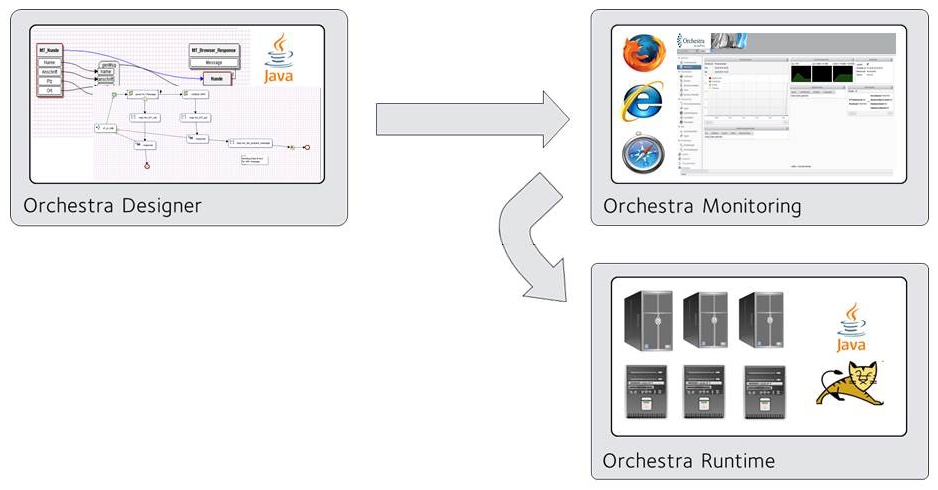

System Requirements

Topic content
The System Requirements are valid for Orchestra Version 4.7.0.0.
Architectural Overview

Hardware Requirements
Orchestra Designer
Processor type |
Single / Dual-Core |
|---|---|
Processor speed |
>= 2 GHz |
RAM |
>= 2 GB |
Disk space |
1 GB |
Orchestra runtime
Small installation
•For example, for a development system
•Database and Orchestra are installed on the same machine
Processor type |
x86 Processor, Dual-Core |
|---|---|
Processor speed |
>= 2 GHz |
RAM |
>= 4 GB |
Disk space – only Orchestra |
1 GB |
Disk space – Database |
>10 GB |
Larger installation
Processor type |
x86 Processor, Quad-Core |
|---|---|
Processor speed |
>= 2 GHz |
RAM |
>= 6 GB |
Disk space – only Orchestra |
1 GB |
Disk space – Database |
>80 GB |
Disk space – Archive-/Protocol files |
>50 GB |
Note on the disk space for database:
•It strongly depends on the process mode (volatile, persistent)
•How long will the data be kept (Housekeeping)
•Size and frequency of the input data
Software requirements
Supported Operating Systems
•Windows Server 2008, 2012 and 2016 (no Core installation!)
•Windows 7, 8.1 and 10
•Suse Linux Enterprise Server 10, 11 and 12
•Ubuntu Linux 14.04, 16.04
•Sun Solaris
•Red Hat Enterprise Linux 6 and 7
The listed operating systems are supported for Orchestra in 32 and 64bit versions.
Orchestra Designer
Oracle Java JRE 1.8
Orchestra Runtime/Monitoring
Java VM |
Oracle JRE 1.8 |
|---|---|
Servlet Container |
Apache Tomcat 7, 8 and 8.5 |
Webbrowser |
Internet Explorer (Version 8-11),Edge, Firefox, Chrome |
Note:
•Orchestra should run alone in the servlet container
•The Apache Tomcat versions 8.0.29, 8.0.32 and 8.0.35 are buggy. Please don't use them!
•With Internet Explorer 11 problems with the Dashboard can occur!
•With Chrome it is not possible to hide columns!
Supported databases
•Oracle 10, 11, 12
•DB2 10 and 11
•MS SQL Server 2008, 2012, 2014
•MySQL 5.6 and 5.7
•MariaDB 10
Virus scanner
The use of a virus scanner in conjunction with Orchestra is not excluded. Currently there are no negative experiences on Orchestra systems in combination with a virus scanner. Negative influence on the performance or web access is possible, depending on the settings of the virus scanner. In order to prevent performance degradation, we would suggest excluding standard Orchestra directories from the virus check.
The following directories must be considered:
•Orchestra log directory
•Tomcat log directory
•Directory of the Orchestra Long time archive
•Archive directories of external archive logger